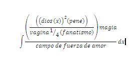
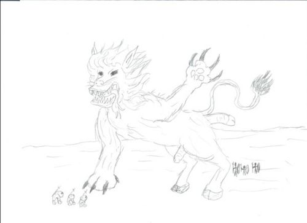

De: La Frikipedia, la enciclopedia extremadamente seria.
De: La Frikipedia, la enciclopedia extremadamente seria. De: La Frikipedia, la enciclopedia extremadamente seria.

|
ATENCIÓN El autor de este artículo es un auténtico borrico. Como no se ha leído las ayudas, se ha saltado a la torera un porrón de normas. Por tanto, hay que modificar el artículo, ya que de no haber nadie que lo modifique puede ser eliminado. |
La isla del mármol es la teoría más exacta sobre la creación del universo que conocemos pues hemos pasado por alto una enorme cantidad de cosas que pareciera no queremos ver, pero están ahí gritándonos la verdad del mundo.
Como es de suponerse una masa amorfe llamada dios que se creo a si misma al aplicar la derivada integral de dios pues dios era una cosa sin sentido, un montón de nada que se integro en un solo ente y esto es fácil de explicar usando la ecuación integral de dios que es esta
 Esta integral explica claramente la creación de dios a si mismo proseguiremos con la exposición del tema.
Debido a que dios supuesto creador de todo lo visible y lo invisible y todo lo demás lógicamente es imposible que si él se creó así mismo otro ente no lo hubiera hecho también.
De esta manera, como dios es pureza y bondad todo lo que sobro que era pura maldad aplico la misma integral que dios y de esta manera se genero el consejo del espíritus malvados, como el espíritu de la circuncisión y de la vasectomía. pues ante la generación de estos dos se genero inmediatamente una tremenda pelea de dimensiones tetánicas que genero un caos total sobre todo el universo, y de toda la mierda que salio de este pleito salio la tierra que como es de todos sabido tiene forma de rebanada de pan y se encuentra rodeada por un campo de fuerza de infinidad. lo que a su vez genera la teoría cósmica de los campos de fuerza. pero eso sera después.
como es de todos conocido en la tierra existe la flora y la fauna, la flora representa a las plantas, arboles, y demás objetos inanimados que son parte de los biomas, y la fauna representa a los animales y especies que viven en estos biomas.
En primer lugar están las tres especies principales en la tierra, Los glans, Los primates y los T-cup (T-cup: se le conoce a la acción de estrellar los calva de un hombre).
en la tierra también existían muchas especies mas, como el mitológico Leonpardo, el oso emplumado, los flagelos las enormes ballenas los negros, los leonpardos bebes, las cucarachas boladoras y muchos otros. Pero son duda el mas destacado de estos y que jugo un papel muy importante en el nuevo reparto de mundo según el evangelio san glans, fue el mítico leonpardo. 
Antigua representación del Leonpardo luchando contra los glans durante la invasión glans a la republica del congo habitat natural de los negros.
la flora abundante de la tierra constaba de plantas carnívoras, hervivoras y plantas ovíparas, arboles inanimados con sus correspondientes genitales, ademas de una enorme variedad de plantas mamiferas que solían reproducirse por fisión binaria mediante el método socratico, primero se humillaban totalmente y después se aplicaban la mayeutica asta tener un parto espiritual que las hiciera reproducirse.
Después de haberse creado la tierra debido a aquel pleoto entre dios y el consejo del mal la vida empezó a nacer por medio de la creación espontánea que se da mediante la integral de la vida.
El documento mas antiguo del que se tiene registro es el del nuevo reparto del mundo según el evangelio de sanglans. Que en el cual se expone que el mundo con su muy conocida forma de rebanada de pan se encontraba dividido en varios continentes e islas, estaba la isla glans, el continente perdido de la glandia, la república del congo, las islas primates, la ista T-cup, la isla M-force con su respectivo archipiélago de la Multi O, la república maguanera, isla de la homosexualidad, las islas mazorquistas matematicas, el mítico continente humano que es donde todos vivimos y el mas importante de todos, el archipielago del consejo del mal.
En aquel entones no existía el humano como lo conocemos, pero en el evangelio de san glans se sita un guerra épica en la que el avanzado sistema monarquico de los glans les había hecho evolucionar socialmente mas que cualquier otra raza en la tierra lo cual introdujo en sus mentes la idea de querer dominar el mundo y realizaron un ataque empezando por las islas M-force, pero su ataque seria contra restado por su némesis, los T-cup, hubo muchas batallas pero la mas recordada es la del ataque de los glans a la república del congo cuyos habitantes invocaron por medio de sus conjuros de negros osea rapeando al compaz del hip hop al la bestia mítica, el leonpardo quien logro derrotar a los glans, depués de esto muchos levantamientos hubo y en el que nacieron los humanos modernos fue en la batalla del estrecho del primate en donde los T-cup se aliaron con los primates para luchar contra los glans en donde por una fulminante fuerza extraterrestre se creo el hombre tras la unión de estos tres se creo el hombre moderno aplicando la integral del humano.
De esta manera nació el humano moderno, estúpido, irracional, ingenuo, ignorante mentiroso, mediocre y mortal.
Capítulos mas adelante en el evangelio según san glans se habla sobre una gran guerra entre los hombres pues aquella integración había creado al humano macho, y hacían falta las hembras, lo cual genero una tremenda guerra causante también de la primer cruzada en busca de la humana. De esta manera se encontraron tras una larga expedición por los mares, las impresionantes y hermosas islas Multi'O', don de encontraron al némesis de los glans, los temibles invaginados, los cuales se creía solo eran un mito. Impresionados por la aparición de esta especie los hombres sintieron un tremendo deseo de tener relaciones sexuales con estos, pues era la única forma de combatir con esta temible especie.
Autor(es):